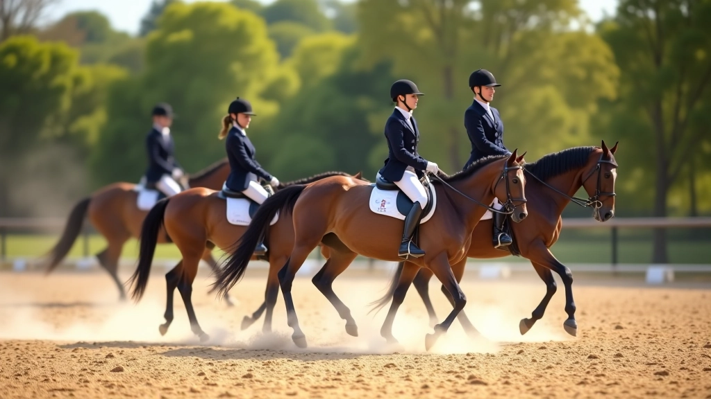
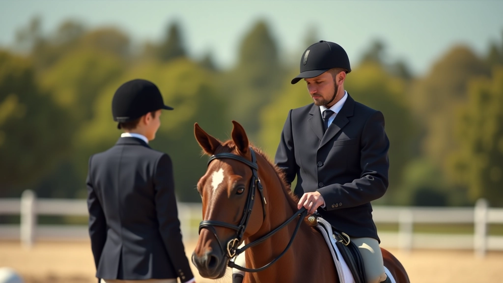
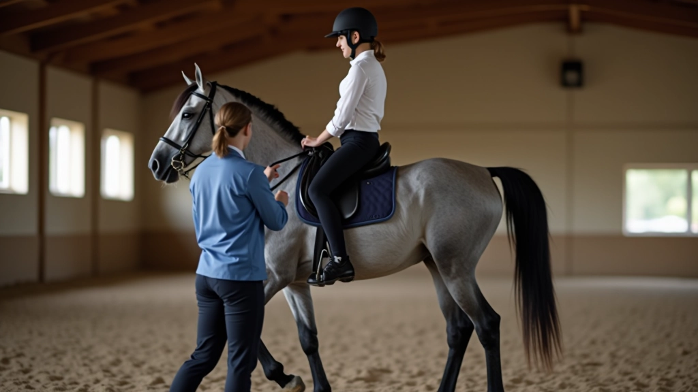
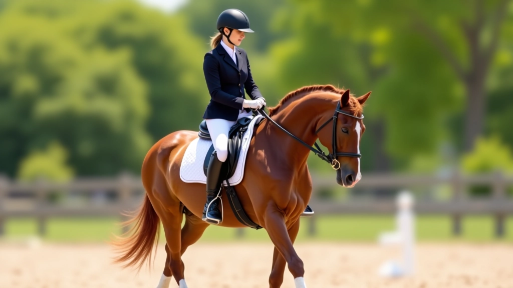
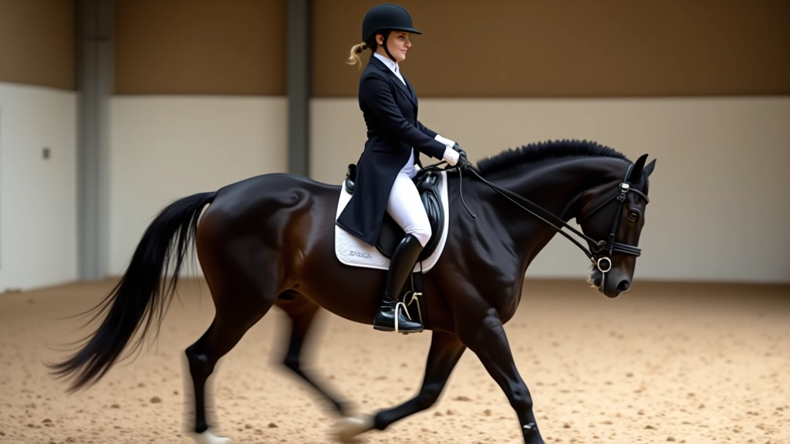

أساسيات انتقال المشي: البداية الصحيحة
يشرح هذا الدليل خطوات البدء الصحيحة لتعليم حصانك انتقالات المشي الأساسية مع الترويض السليم.
اقرأ المقالةخطة تدريب منظمة تغطي جميع مراحل التطور من التوقف البسيط إلى الانتقالات المتقدمة والمعقدة

الكاتب
فريق المحتوى التحريري
كتبه فريق إسطبل النيل التحريري، المتخصص في تقديم إرشادات عملية وموثوقة عن تدريب الخيل والترويض.
التدريب الفعّال لا يعني الانطلاق بسرعة. إنه يتعلق بالخطوات المنظمة والمتسلسلة. نحن نقدم لك برنامجاً يبني المهارات تدريجياً — من الأساسيات البسيطة إلى التقنيات المتقدمة. كل مرحلة تُعد أساساً متيناً للمرحلة التالية.
سواء كنت تبدأ للتو أو تسعى لتحسين مهاراتك الحالية، هذا البرنامج موجود لك. نركز على التقنيات الفعلية — الحركات الدقيقة، توقيت الإشارات، وبناء الثقة بينك وبين حصانك.

في الأسابيع الأولى، نركز على بناء أساس قوي. لا تستعجل — المبتدئ يحتاج إلى فهم عميق لحركات الحصان الطبيعية قبل أي شيء آخر.
المدة: 4-6 أسابيع. في هذه المرحلة ستلاحظ تحسناً ملموساً في استجابة حصانك وراحته معك.

بعد إتقان الأساسيات، ننتقل إلى تطوير التقنيات الفعلية. هذا هو المكان الذي تبدأ فيه الانتقالات البسيطة — المشي إلى الهرولة، الهرولة إلى الركض.
في هذه المرحلة، ستركز على:
المدة: 6-8 أسابيع. معظم الفرسان يشعرون بثقة أكبر بكثير في هذه المرحلة ويرون تقدماً ملحوظاً في أداء حصانهم.

المعلومات المقدمة في هذا الدليل تعليمية بطبيعتها. كل حصان فريد، وكل متدرب له احتياجات مختلفة. نوصي بشدة بالعمل مع مدرب متخصص يفهم حالتك وحصانك بشكل مباشر. الإرشادات هنا تساعدك على فهم العملية، لكن التدريب الشخصي لا غنى عنه لتحقيق النتائج المثلى.
الآن تصل إلى المستوى الذي يفصل الفرسان العاديين عن المحترفين. الانتقالات المتقدمة تتطلب دقة وتوقيتاً مثالياً وتفاهماً عميقاً بين الفارس والحصان.
ستتعلم:
المدة: 8-12 أسبوعاً. في هذه المرحلة، يصبح التدريب أكثر تخصصاً ويتطلب صبراً وممارسة منتظمة.

التدريب ليس له نهاية حقيقية — إنه رحلة مستمرة من التحسن والتعلم. حتى أفضل الفرسان يستمرون في صقل مهاراتهم والاستكشاف. الفرق بين المبتدئ والمحترف ليس القدرة الطبيعية فقط، بل الالتزام والممارسة المنتظمة والرغبة في التطور.
تذكر: كل خطوة للأمام — مهما كانت صغيرة — هي انتصار. كل جلسة تدريب تضيف إلى معرفتك وخبرتك. استمتع بالعملية، كن صبوراً مع نفسك ومع حصانك، وستصل إلى حيث تريد.
تعمق أكثر في جوانب محددة من التدريب
يشرح هذا الدليل خطوات البدء الصحيحة لتعليم حصانك انتقالات المشي الأساسية مع الترويض السليم.
اقرأ المقالة
تقنيات متقدمة لتعليم حصانك التوقف المثالي مع الحفاظ على الانتباه والاستجابة للإشارات.
اقرأ المقالة
تعرّف على المشاكل الشائعة التي يواجهها المتدربون وكيفية تصحيحها لتحسين جودة الانتقالات.
اقرأ المقالة